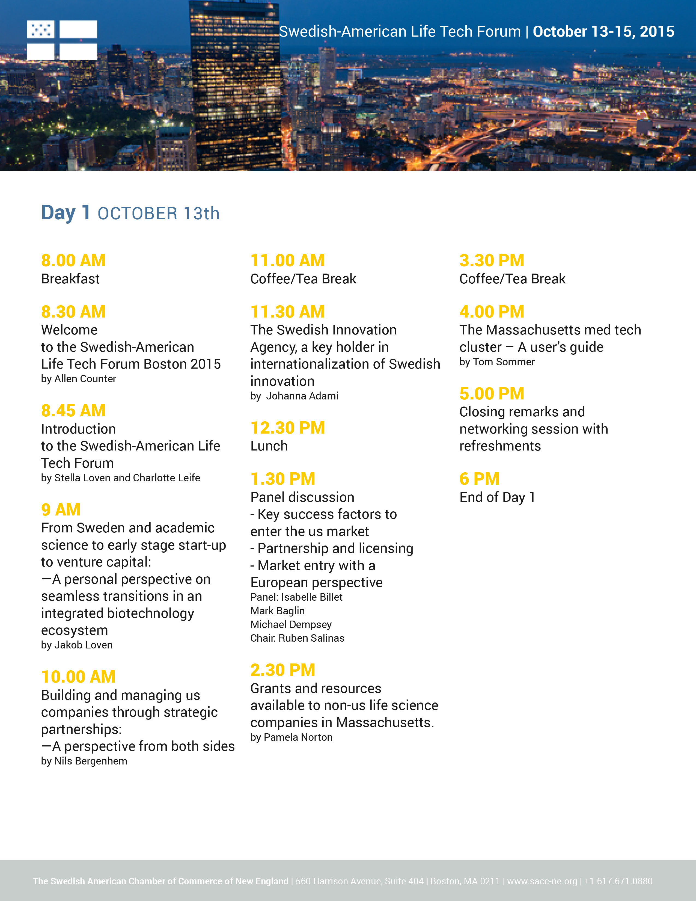
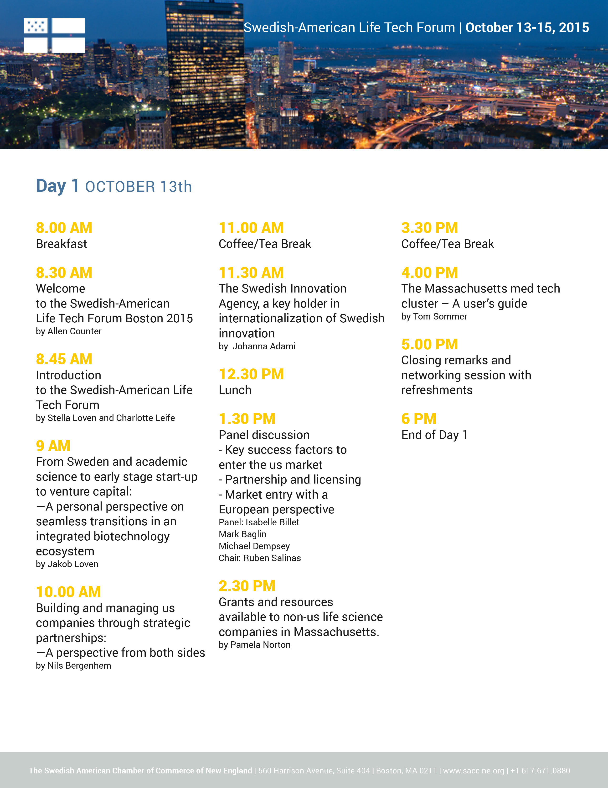

Life Tech Forum
The Swedish American Chamber of Commerce in New England is hosting a Life Tech Forum in Boston in October 2015. They wanted the forum to have its own identity and presence so that it would stand out and be engaging for potential participants. I started by making PDFs of the programs for the forum, and the web design was inspired by those initial designs.
 

I also made a small logo that would represent the forum and be a quick identifier and design element, along with an e-mail template in MailChimp that they could use to communicate with people who signed up.